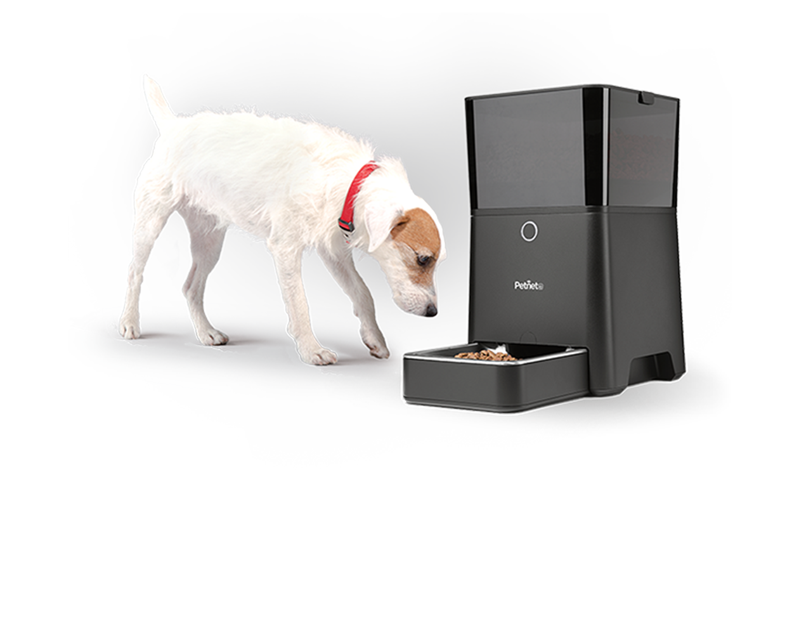

<!DOCTYPE html>
<html lang="en">
<head>
    <meta http-equiv="Content-Type" content="text/html; charset=UTF-8">
    <meta http-equiv="X-UA-Compatible" content="IE=edge">
    <meta name="msapplication-tap-highlight" content="no">
    <title>Arducam Mini + ESP8266 Video Demo</title>

    <meta name="description" content="< DESCRIPTION >">
    <meta name="author" content="< AUTHOR >">

    <!-- Compiled and minified CSS -->
    <link rel="stylesheet" href="css/materialize.min.css">
    <link rel="stylesheet" href="css/custom.css">
</head>
<body>
    <!--  -->
    
    <h6 id="msgDetail"style="position: fixed; bottom: 0; width:100%; text-align: center"></h6>
    <div id ="loading"class="row center custom_center">
      <div class="preloader-wrapper big active">
      <div class="spinner-layer custom_spinner">
        <div class="circle-clipper left">
          <div class="circle "></div>
        </div><div class="gap-patch ">
          <div class="circle"></div>
        </div><div class="circle-clipper right ">
          <div class="circle"></div>
        </div>
      </div>
    </div>
    </div>


    <!-- Compiled and minified JavaScript -->
    <script type="text/javascript" src="js/jquery-2.2.4.min.js"></script>
    <script type="text/javascript" src="js/materialize.min.js"></script>
    <script type="text/javascript" src="js/index.js"></script>
</body>
</html>
